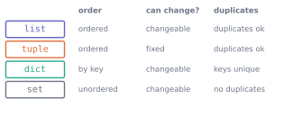

3. Collections
Python · Unit 3
Why this unit is here
Data arrives in quantity. A single score is not interesting; two hundred and forty of them are.
Python gives you four containers for holding many values, and they are not interchangeable. Choosing the wrong one usually still works — which is the problem, because it works slowly, or it lets a duplicate through, or it lets something change underneath you. Choosing well takes one question, asked before you type.
3.1 Before you start
You should be able to:
Quick check. After a = 5 and b = a and a = 9, what is b?
TipShow the answer
5. Reassigning a moved one label; b still points at the original value. This unit is where that idea stops being a curiosity.
3.2 The idea
The four containers differ along three questions, and that is the whole of it:
- A list is an ordered, changeable sequence. It is the default, and most of the time it is right.
- A tuple is an ordered sequence you cannot change. Use it when a group of values belongs together and should stay put.
- A dictionary stores values under keys, so you look things up by name rather than by position.
- A set holds unique values with no order. Use it to ask have I seen this before?
3.3 The mechanics
Lists
scores = [68.4, 55.1, 72.0, 61.3]
print(scores[0], scores[-1]) # first and last
print(scores[1:3]) # a slice: from 1, up to but not including 3
print(len(scores))68.4 61.3
[55.1, 72.0]
4Python counts from zero, so the first item is at index 0 and the last is at len(scores) - 1. Negative indices count back from the end, which saves you writing scores[len(scores) - 1].
Slicing takes start:stop, and stop is not included. scores[1:3] gives two items, not three. That convention looks odd for a day and then becomes convenient, because scores[:2] and scores[2:] split the list with no overlap and no gap.
Lists change in place:
scores.append(59.8)
scores[0] = 70.0
print(scores)[70.0, 55.1, 72.0, 61.3, 59.8]The part that catches people
Because a list can change in place, two names on the same list see each other’s changes:
original = [1, 2, 3]
alias = original # another label on the SAME list
alias.append(4)
print("original:", original)
print("alias: ", alias)original: [1, 2, 3, 4]
alias: [1, 2, 3, 4]That is the P2 picture with real consequences. If you want an independent list, ask for one:
original = [1, 2, 3]
independent = original.copy()
independent.append(4)
print("original: ", original)
print("independent:", independent)original: [1, 2, 3]
independent: [1, 2, 3, 4]Tuples
Parentheses instead of brackets, and no changing afterwards:
point = (52.24, -0.90) # latitude, longitude
print(point[0])
point[0] = 052.24--------------------------------------------------------------------------- TypeError Traceback (most recent call last) Cell In[6], line 3 1 point = (52.24, -0.90) # latitude, longitude 2 print(point[0]) ----> 3 point[0] = 0 TypeError: 'tuple' object does not support item assignment
The error is the point of a tuple. A coordinate pair, a date, a colour stored as its red, green and blue amounts — things whose parts belong together and should not be edited one at a time.
Dictionaries
student = {"id": "S0042", "background": "Life sciences", "score": 68.4}
print(student["background"])
student["completed"] = True # add a new key
print(list(student.keys()))Life sciences
['id', 'background', 'score', 'completed']Look-up is by key, and student["score"] says what it means in a way that row[2] never will. A key must be a value that cannot change, such as a string or a number. Asking for a key that does not exist raises:
student["age"]--------------------------------------------------------------------------- KeyError Traceback (most recent call last) Cell In[8], line 1 ----> 1 student["age"] KeyError: 'age'
Use .get() when absence is expected rather than exceptional:
print(student.get("age", "not recorded"))not recordedSets
backgrounds = ["Computing", "Life sciences", "Computing", "Social sciences"]
unique = set(backgrounds)
print(unique)
print(len(backgrounds), "values,", len(unique), "distinct"){'Social sciences', 'Computing', 'Life sciences'}
4 values, 3 distinctSets are unordered. The printed order is not sorted and must never be relied on — if you want order, ask for it:
print(sorted(unique))['Computing', 'Life sciences', 'Social sciences']Membership testing is what sets are really for, and on a large collection it is enormously faster than scanning a list:
print("Computing" in unique)True3.4 Worked example
Summarising the cohort with the right container for each job.
import csv # load Python's ready-made tools for CSV files
from pathlib import Path # and for file paths (imports are explained in P5)
# open the file, read each row, and collect the rows into a list
rows = list(csv.DictReader(Path("data/cohort.csv").open()))
print(len(rows), "rows")
print(rows[0])240 rows
{'student_id': 'S0001', 'background': 'Mathematics or Physics', 'diagnostic_score': '89.1', 'hours_practice': '12.9', 'final_score': '83.6', 'completed': 'True', 'started_on': '2026-09-23'}csv.DictReader gives one dictionary per row, keyed by column name — so row["final_score"] rather than row[4]. Note that every value is a string: the file is text, and nothing has yet decided what the columns mean.
Now three questions, each answered by a different container.
Which backgrounds appear? Uniqueness matters, order does not — a set:
backgrounds = {row["background"] for row in rows if row["background"]}
for name in sorted(backgrounds):
print(" ", name) Computing
Engineering
Life sciences
Mathematics or Physics
Social sciencesThe curly brackets build a set in one line, keeping the background of each row if it is not empty — an empty string counts as false. This shorthand is a comprehension, explained in P4.
What is the mean score in each? Look-up by name — a dictionary of lists:
by_background = {}
skipped = 0
for row in rows:
group, raw = row["background"], row["final_score"] # two names, two values, in order
if not group or not raw: # an empty string counts as false
skipped += 1 # short for skipped = skipped + 1
continue # skip the rest of this pass; go to the next row
score = float(raw)
if not 0 <= score <= 100: # outside 0 to 100 (comparisons: P4)
skipped += 1
continue
by_background.setdefault(group, []).append(score)
for name in sorted(by_background):
scores = by_background[name]
print(f" {name:<24} n={len(scores):>3} mean={sum(scores)/len(scores):5.2f}")
print(f"\n {skipped} rows skipped") Computing n= 69 mean=65.85
Engineering n= 36 mean=67.15
Life sciences n= 57 mean=60.51
Mathematics or Physics n= 36 mean=75.28
Social sciences n= 39 mean=60.21
3 rows skippedsetdefault creates the empty list the first time a group is seen, so you do not have to check whether the key exists on every row.
Notice the three skipped rows are counted, not silently dropped. That number is part of the result; P9 makes it an audit file.
The five highest scores? Order matters — a sorted list:
# every score s from every group's list, gathered into one flat list
all_scores = [s for scores in by_background.values() for s in scores]
print(sorted(all_scores, reverse=True)[:5])[91.6, 88.8, 88.5, 86.6, 85.3]3.5 Try it yourself
Exercise 1 Predict the output, then run it.
values = [10, 20, 30, 40, 50]
print(values[1:4])
print(values[:2])
print(values[-2:])
TipShow the solution
[20, 30, 40], [10, 20], [40, 50].
The first stops before index 4. The second takes everything up to index 2. The third starts two from the end. Together they show why the convention is convenient: values[:2] + values[2:] reconstructs the whole list exactly.
Exercise 2 This is meant to leave baseline untouched. It does not. Fix it, and say what went wrong.
baseline = [1, 2, 3]
adjusted = baseline
adjusted.append(4)
TipShow the solution
adjusted = baseline makes a second label on the same list, so .append is visible through both names. baseline is now [1, 2, 3, 4].
The fix is to ask for an independent list:
adjusted = baseline.copy()This is the commonest source of “but I never changed that variable” in a beginner’s code, and it only happens with containers that can change in place — which is why tuples do not have the problem.
Exercise 3 For each, name the container you would use and why in one clause.
- Every distinct postcode in a delivery file, to check whether a new one has been seen before.
- A student’s id, name and score, passed around as one thing.
- Look up a country’s population by its name.
- Daily temperature readings, in the order taken.
TipShow the solution
- Set — you want uniqueness, and
inon a set stays fast however many postcodes there are. - Tuple — the three belong together and should not be edited individually. (A dictionary is also defensible if you want the fields named.)
- Dictionary — look-up by key is exactly what it is for.
- List — order carries meaning, and you will want to append.
The question to ask each time: do I look things up by position, by name, or just ask whether something is present?
3.6 Check it in Python
Two checks worth building into the way you work.
Confirm you have an independent copy when you meant to:
baseline = [1, 2, 3]
adjusted = baseline.copy()
adjusted.append(4)
# assert does nothing if the test is true; if false, it stops with the message
assert baseline == [1, 2, 3], "baseline was modified"
print("baseline intact:", baseline)
print("same object? ", adjusted is baseline)baseline intact: [1, 2, 3]
same object? Falseis asks whether two names point at the same object; == asks whether two objects have the same contents. Two separate lists holding [1, 2, 3] are == but not is.
Count what you dropped, every time:
raw = ["68.4", "", "72.1", "not recorded", "55.0"]
usable, dropped = [], []
for value in raw:
try:
usable.append(float(value))
except ValueError:
dropped.append(value)
print(f"kept {len(usable)} of {len(raw)}; dropped {dropped}")
assert len(usable) + len(dropped) == len(raw)kept 3 of 5; dropped ['', 'not recorded']try runs the indented line; if it raises a ValueError — here, because float("not recorded") has no sensible answer — Python jumps to the except block instead of stopping, and the loop carries on with the next value. Any other error still stops the program, which is what you want.
The assertion says nothing went missing unaccounted for. It is one line and it turns a silent loss into a loud one.
3.7 Common wrong turns
Where this usually goes wrong
- Assuming assignment copies a container
-
b = agives a second name for the same list. Use.copy()when you want an independent one, and remember that numbers and strings never have this problem because they cannot be changed in place. - Relying on the order a set prints in
-
Sets are unordered. The printed order can differ between runs and versions. Call
sorted()if you need an order. - Using a list for membership tests on large data
-
x in some_listscans from the start.x in some_setdoes not. On a hundred thousand items the difference is dramatic. - Indexing rows by number
-
row[4]breaks the moment a column is inserted, and it tells a reader nothing.row["final_score"]survives, and explains itself. - Being caught by the exclusive slice end
-
values[1:3]gives two items. It is a convention worth learning rather than fighting: adjacent slices join up with no overlap. - Dropping rows without counting them
- Every filtered-out row is a decision. Count them and say how many, or you have no idea whether you removed three or three hundred.
3.8 Check yourself
Answers are at the foot of the page.
What does
[10, 20, 30, 40][1:3]give?[10, 20][20, 30][20, 30, 40][10, 20, 30]
Counting starts at 0, so index 1 is not the first item.
A slice stops before its stop index.
Check two things: which item sits at index 1, and whether the stop index is included.
a = [1, 2];b = a;b.append(3). What isa, and why?
- Why can a tuple be a dictionary key when a list cannot?
- You need to know whether each of a million ids has been seen before. List or set, and why?
print(some_set)gives a different order on a colleague’s machine. Is that a bug?
TipShow the answers
(b)
[20, 30]. Start at index 1, stop before index 3.[1, 2, 3].bis another label on the same list, and.appendchanges the list itself rather than making a new one.Because a dictionary key must not change after it is stored — the dictionary files it by its contents. A tuple cannot change, so a tuple of strings or numbers is safe; a list can, which would leave the entry unfindable. (Python enforces this: using a list as a key raises
TypeError: unhashable type— “unhashable” means “cannot be used as a key”. A tuple that contains a list is refused in the same way.)A set.
inon a set does not depend on how many items it holds; on a list it scans, so a million ids means up to a million comparisons each time.No. Sets have no order to be wrong about. If order matters to you, that is a signal you should be sorting, or should not be using a set.